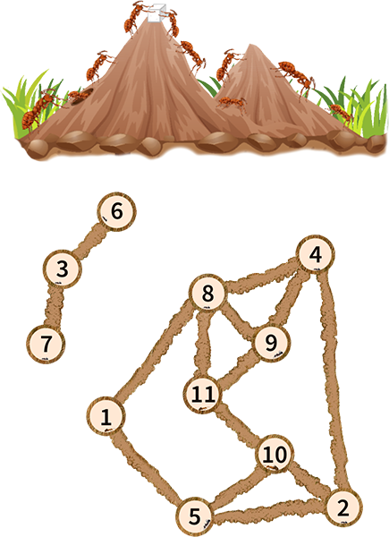
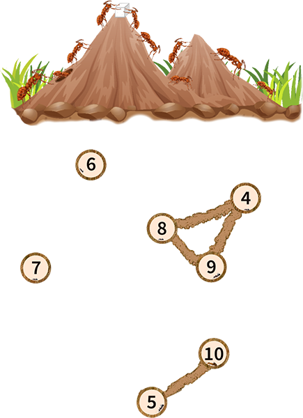
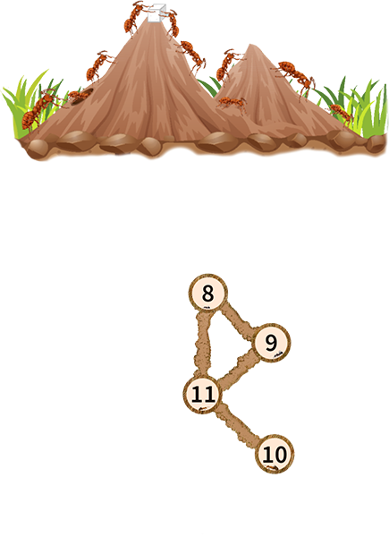

Pak Dengklek found an ant nest underground. The nest consists of $N$ rooms numbered from $1$ to $N$ where each room contains an ant. There are $M$ tunnels numbered from $1$ to $M$ where the $i$-th tunnel connects rooms $U_i$ and $V_i$.
Ants are social insects that like to work together. An ant is said to be lonely if and only if it cannot reach $2$ or more other ants (ants other than itself) from its room through one or more available tunnels.
Pak Dengklek will choose a pair of integers $(l, r)$ that satisfies $1 \leq l \leq r \leq N$. Then, Pak Dengklek will destroy each room $x$ that satisfies $x < l$ or $x > r$ and remove each ant in those rooms. Of course, the tunnels connected to the destroyed rooms are also destroyed.
Pak Dengklek is worried about his ants, so for a pair $(l, r)$, Pak Dengklek defines the loneliness value $f(l, r)$ as the number of remaining ants that are lonely after destroying the rooms.
Pak Dengklek is bored and wants to find the sum of loneliness values $f(l, r)$ for every pair $(l, r)$ that satisfies $1 \leq l \leq r \leq N$. Help Pak Dengklek!
The input is given with the following format:
N M U1 V1 U2 V2 ⋮ UM VM
Output a single line containing an integer representing the sum of loneliness values $f(l, r)$ for every pair $(l, r)$ that satisfies $1 \leq l \leq r \leq N$.
11 14 1 5 1 8 2 4 2 5 2 10 3 6 3 7 4 8 4 9 5 10 8 9 8 11 9 11 10 11
128
The following is the shape of the entire ant nest.

As an example, for $(l, r) = (4, 10)$, the following is the shape of the remaining ant nest.

It can be seen that:
The lonely ants are the ants in rooms $5$, $6$, $7$, and $10$. Therefore, $f(4, 10) = 4$.
As another example, for $(l, r) = (8, 11)$, the following is the shape of the remaining ant nest.

It can be seen that each remaining ant can reach $3$ other ants, so there are no lonely ants. Therefore, $f(8, 11) = 0$.
4 3 2 4 1 2 2 3
10
All values of $f(l, r)$ are as follows:
Therefore, the sum is $1+2+0+0+1+2+0+1+2+1 = 10$.